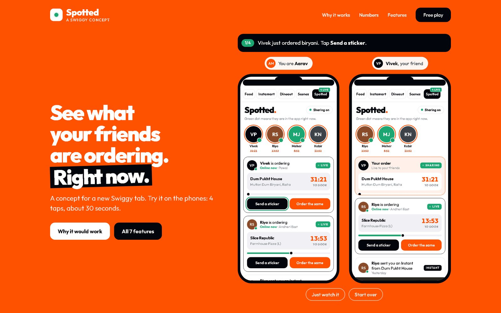

01
Spotted A social tab for Swiggy · concept · 2026
Swiggy's generic pushes get ignored, but a sticker from a friend gets opened. I designed a tab where friends see each other's orders live and order the same in one tap, then planned how Swiggy could test it in four weeks.
- Research
- Product spec
- Interaction design
- Prototype